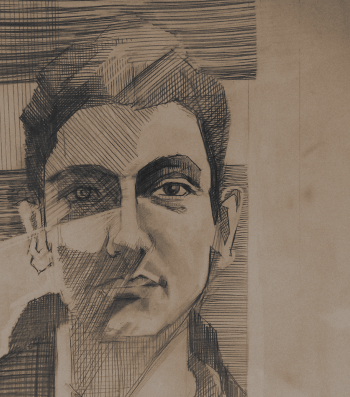

My Name is Maximilian Alber. I am a Ph.D. student in Klaus-Roberts Müller's machine learning group at TU Berlin. My research interests are located in the crossover between engineering and machine learning. Among others, I am/was working on the following topics: (Deep) Neural Networks, Analysis of Neural Networks, Scaling ML, AutoML, Extreme Classification, Kernel Machines.
Born and raised in the Italian mountains. Fluent in German, English, and Italian. Learned to tackle problems at the competitive Olympiads in Informatics. Graduated at the FU Berlin. Studied abroad in Bologna, Italy, and Toronto, Canada. Work experience from free lancing, from software development at Endian SRL and at Fraunhofer FOKUS. Been Quoc Le's intern at Google Brain.
